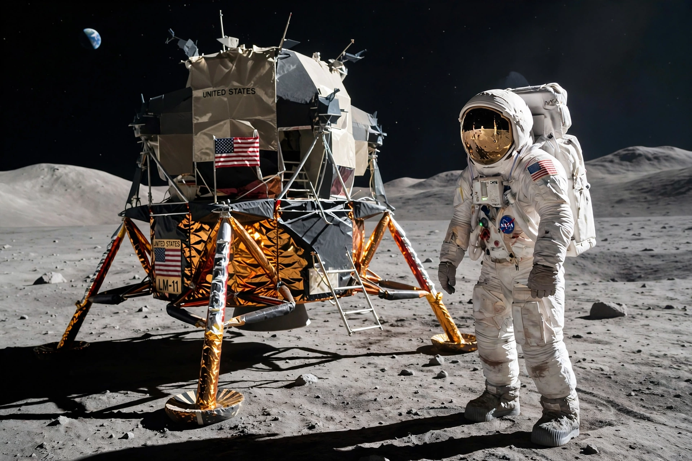

Apollo 11
Apollo 11 was the American spaceflight that first landed humans on the Moon. Commander Neil Armstrong and Lunar Module pilot Buzz Aldrin landed the Lunar Module Eagle on 20 July 1969 in the Sea of Tranquility; Armstrong became the first person to step onto the lunar surface about six and a half hours later, followed by Aldrin, while Michael Collins remained in orbit in the Command Module Columbia.

| Operator | NASA |
|---|---|
| Crew | Neil Armstrong, Michael Collins, Buzz Aldrin |
| Launch | 16 July 1969, Kennedy Space Center |
| Lunar landing | 20 July 1969, Sea of Tranquility |
| Splashdown | 24 July 1969, Pacific Ocean |
| Duration | 8 days, 3 hours, 18 minutes |
Mission
Launched by a Saturn V rocket on 16 July 1969, Apollo 11 fulfilled President John F. Kennedy's 1961 goal of landing a man on the Moon before the end of the decade. The descent to the surface was tense: computer alarms (1201 and 1202) flashed during the powered descent, and Armstrong took manual control to avoid a boulder field, landing with roughly 25 seconds of usable fuel remaining. His first words from the surface — "Houston, Tranquility Base here. The Eagle has landed" — were followed, on stepping down, by "That's one small step for [a] man, one giant leap for mankind."
Moonwalk and return
Armstrong and Aldrin spent about two hours and fifteen minutes outside the spacecraft, collecting 21.5 kg of lunar material, deploying experiments, and planting the US flag. After rendezvous with Collins, the crew splashed down in the Pacific on 24 July and were held in quarantine for three weeks against the remote possibility of lunar pathogens. An estimated 600 million people watched the landing live on television.
Legacy
Apollo 11 remains a landmark of exploration and engineering; its samples, retroreflectors and landing site hardware continue to yield science, and the mission is commemorated worldwide, including on the 50th anniversary in 2019.
See also
Arm · Apollo program · Neil Armstrong · Saturn V